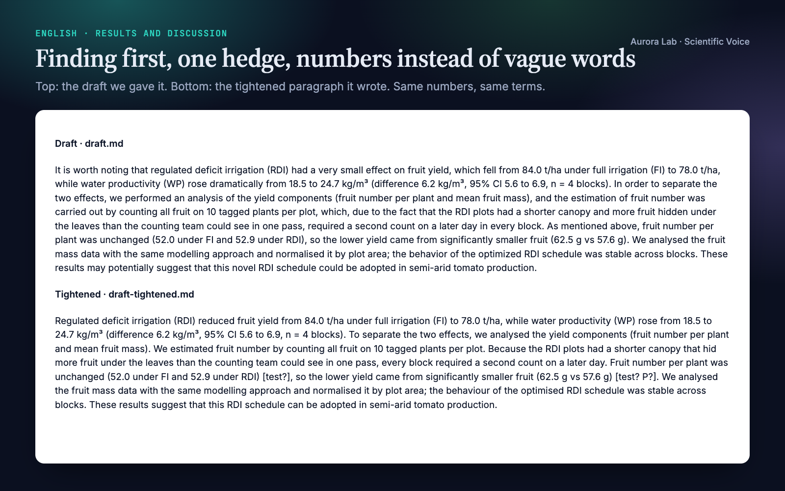
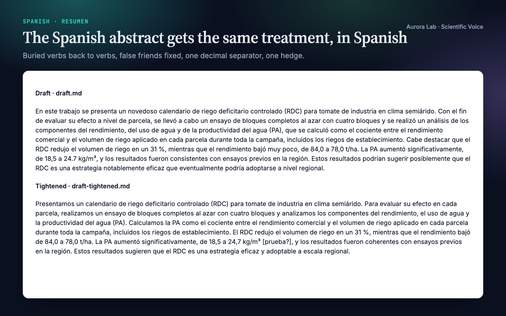
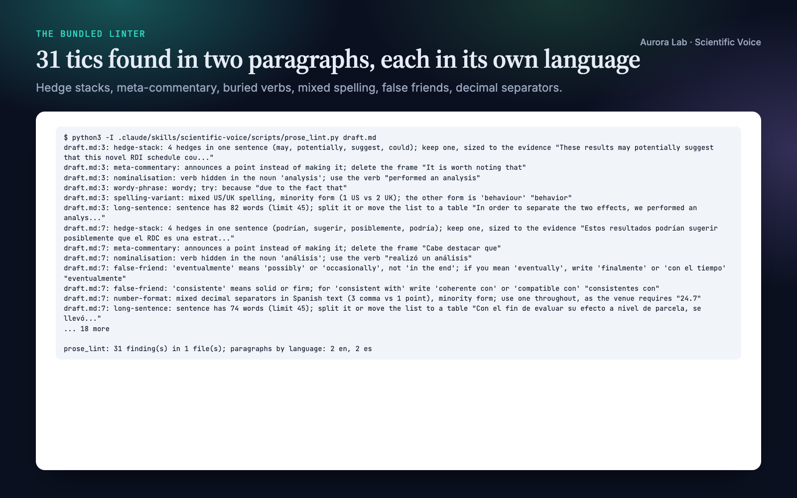
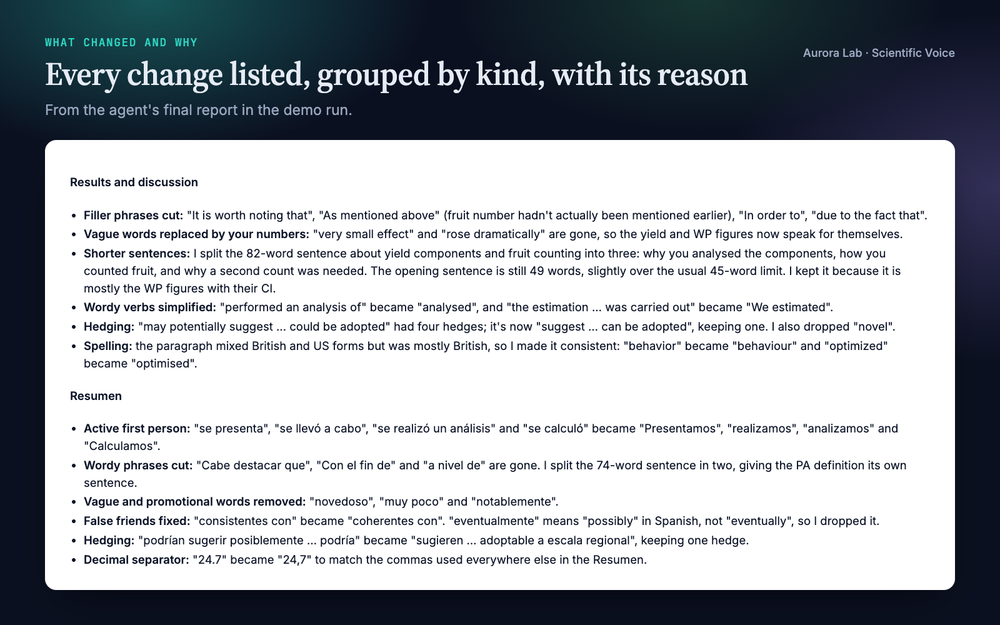
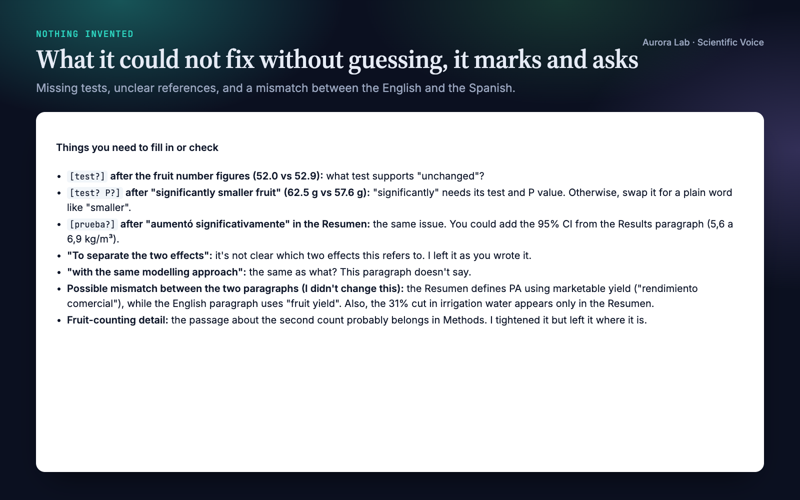
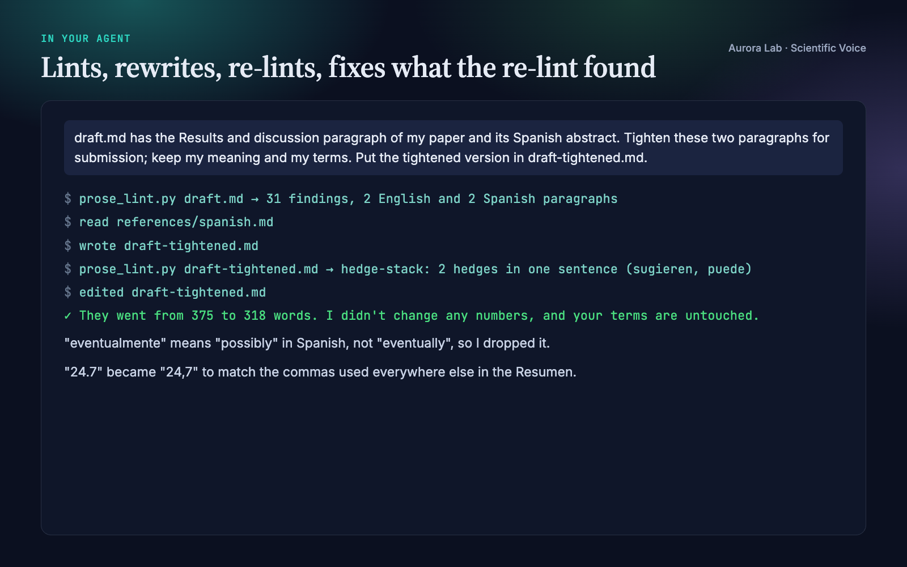

Overview
Reviewers read your draft once. Most of what slows them down is small and mechanical: a caveat before the result, "may potentially suggest", "It is worth noting that", "very small effect" where a number would do, "performed an analysis of", an 80-word sentence, colour and color in the same paper. In Spanish the list is longer: "se realizó un análisis de", "cabe destacar que", "eventualmente" used for "in the end", a stray decimal point among decimal commas. Scientific Voice makes your agent find and fix all of it:
- Finding first. Each paragraph opens with its result; the limitation follows, attached to its consequence.
- One hedge, sized to the evidence. Stacks collapse to a single hedge. A hedge that carries real uncertainty is never removed, and a claim is never strengthened.
- Precise beats grand. "Dramatically", "novel" and "very" give way to the number or mechanism they stand for; "significant" is kept for statistics.
- Verbs, not buried nouns; no sentences about the text. "Performed an analysis of" becomes "analysed"; "As mentioned above" and "In this section we describe" go.
- Spanish done in Spanish. Spanish hedges, including the softening conditional, first-person-plural verbs instead of "fue realizado", false friends, and one decimal separator throughout.
- Nothing invented. Numbers, units, citations, math and your technical terms are fixed. A missing test or comparator becomes a visible marker such as
[test?], with a question for you.
Other Aurora Lab skills for the same draft: Claim Check (does each sentence stay inside its evidence?), Journal House Style (does the paper fit the venue?) and Test Readers (how a cold reader takes it) pair well with it. Each works on its own.
Quick start
- Get the skill from Agensi and add it to your agent (Claude Code, Codex CLI, Cursor, Gemini CLI or any agent that loads SKILL.md skills).
- Optional: Python 3.10+ for the linter. It uses the standard library only; the editing itself needs nothing installed.
- Ask in plain words. "Tighten" or "light edit" gives minimal changes; "rewrite" or "polish" gives a full rewrite with a change log; "review" or "lint" gives findings only.
Example requests:
- "Tighten the English results paragraph and the Spanish abstract in draft.md; keep my terms."
- "Polish the Results section in paper/results.md; we use US spelling and no em dashes."
- "Light edit on this abstract, show me each change."
- "This paragraph hedges everything. Make it direct without overclaiming."
- "Revisa el resumen: usamos coma decimal."
What you get
Everything below comes from a real run: a fresh agent session with only this skill installed, given the request in the session card. The input was ours: a synthetic, seeded draft.md with one English Results-and-discussion paragraph and one Spanish abstract from a made-up irrigation trial on processing tomato. We planted the same tics in both (a meta-commentary frame, a four-hedge stack, vague intensifiers, a promotional word, buried verbs, wordy phrases, "significantly" with no test, a sentence over 70 words), plus mixed British and US spelling in the English, and false friends and one stray decimal point in the Spanish. The linter reported 31 findings. The rewrite fixed every planted tic, kept every number and term, cut the two paragraphs from 375 to 318 words, and left three markers for missing tests plus a list of questions, including a mismatch between the English and the Spanish that we had not planted. After the rewrite the linter reports only one long sentence, which the agent kept on purpose and said why, and the three markers. The run took 59 s and cost $0.21. Version 1.1 was rerun on the same request, installed and through Agensi's MCP connection without a skill folder: both runs linted the same 31 findings, fixed the planted tics, kept every number and term, and marked the untested "significantly" with [test?].






How it works
- Pick the mode. Rewrite, edit (before → after per sentence) or review, from the words of the request; edit when unclear.
- Settle house preferences once per project. Spelling variant (US, British, British with -ize), em dashes allowed or banned, the decimal separator for Spanish text, any banned words. They are saved to
.prose-lint.jsonso later sessions apply the same rules. - Lint first. The linter's findings become a checklist of places to look; each one is a prompt, not an order.
- Rewrite in passes, structural fixes first and word-level fixes last: claim first, meta-commentary, one point per paragraph, numbers, negative results, hedges, precise words, verbs, sentence length, openers and flow, tense and terms, house conventions.
- Hold the hard constraints. Meaning fixed, nothing strengthened, terms never renamed, format preserved (Markdown stays Markdown, LaTeX stays LaTeX), gaps marked rather than filled.
- Verify and report. Lint again; every remaining finding is fixed or listed with a reason. The report gives the revised text, the changes (most important first) and what is left for you, and offers to add any correction you accepted twice to your personal patterns.
For Spanish text the agent first reads a reference on Spanish scientific style: hedges, impersonal and passive forms, wordy phrases, false friends and calques, numbers and units, the gerund after a comma, and bilingual abstracts.
Files it reads and writes
| Path | |
|---|---|
| Reads | the text you name, any format; with a research/ folder, research/paper/*, plus research/claims.md read-only so wording stays no stronger than each claim's recorded status |
| Writes | the revised text where you say; files edited in place only when you ask |
| May write | .prose-lint.json (house preferences you state), .prose-lint-personal.txt (recurring errors you agree to add) |
| Never | changes numbers, citations, math or your results files |
The linter
Your agent runs it for you. prose_lint.py is a single self-contained file, with every rule and word list built in: it runs from the skill's scripts/ folder or with the file on standard input (python - draft.md < prose_lint.py), and reads only the text you name plus your own settings files.
python prose_lint.py draft.md
python prose_lint.py paper/ --spelling us --ban-em-dash
python prose_lint.py tesis/ --lang es --spanish-decimal comma
python prose_lint.py --list-rules
Reads Markdown, LaTeX, reStructuredText and plain text, skipping code, math, tables, comments, citations and LaTeX commands. Each paragraph is checked in its own language (English or Spanish, detected from its function words; --lang forces one). Output is one line per finding, path:line: rule-id: message "excerpt", or JSON. Exit status 0 means clean, 1 findings, 2 a usage problem. It writes nothing and needs no network.
| Rule | Catches |
|---|---|
hedge-stack |
two or more hedges in one sentence: may, could, suggest / puede, podría, sugiere, ... |
meta-commentary |
in this section we, it is worth noting that / cabe destacar que, como se mencionó anteriormente, ... |
vague-intensifier, hype-word |
very, dramatically, novel / muy, notablemente, novedoso, ... |
ambiguous-significant |
"significant" or "significativo" with no test or P value in the sentence |
nominalisation |
performed an analysis of / se realizó un análisis de |
wordy-phrase |
in order to, due to the fact that / con el fin de, a nivel de, llevar a cabo |
false-friend |
Spanish: eventualmente, asumir que, consistente con, billón, la data, librería, ... |
spelling-variant |
mixed US/UK spelling in English, or the variant your house rejects |
number-format |
a decimal comma in English; mixed or off-house decimal separators in Spanish |
long-sentence, long-paragraph |
over 45 words / 200 words (configurable) |
doubled-word, leftover-marker |
"the the"; TODO, [ref], and gap markers such as [test?] left behind |
em-dash, banned-word |
off by default: your house rules |
personal-pattern |
your own recurring errors, from a plain-text list |
Personal patterns. One line per error, regex :: message :: suggestion, in .prose-lint-personal.txt (one project) or files you name with --personal or in .prose-lint.json (for example one file for all your projects). Nothing fires until you add a rule; the bundled linter reference has example rules typical of a writer working between Spanish and English.
Deliberately not flagged: "In this study, we show that ..." and "En este trabajo mostramos que ...". They state the paper's contribution, a standard abstract opener, and are content rather than commentary.
FAQ
Does it work on Spanish text?
Yes. Each paragraph is checked in its own language, so one file can hold an English Results section and a Spanish "Resumen". Other languages are not supported.
Will it change my numbers or my terms?
No. Numbers, units, citations, cross-references, math and your technical terms are fixed, and a claim is never strengthened. What a sentence lacks, such as the test behind "significantly", is marked with [test?] and asked about.
How is it different from a grammar checker?
A grammar checker fixes words. This edits the shape of scientific sentences: finding before caveat, one hedge sized to the evidence, no sentences about the text, a number instead of "dramatically", the verb hidden in "performed an analysis of". Every change comes with its reason.
Do I need to run the linter?
No. Without Python the agent applies the same checks by reading. With Python 3.10+ it lints before and after editing, so every remaining finding is fixed or explained.
Can it learn the mistakes I keep making?
Yes, through the personal patterns file. When you accept the same correction twice, the agent offers to add a line for it.
Does it work through Agensi's MCP connection, without a skill folder?
Yes. Your agent loads the instructions and the linter on request and runs the linter in-session. The only files it writes into your project are your edited text and, if you ask, your own .prose-lint.json and .prose-lint-personal.txt; nothing from the skill is copied there. Version 1.1 was tested this way.
Can it enforce my journal's or lab's house style?
For the mechanical parts: spelling variant, Spanish decimal separator, an em-dash ban, banned words, sentence and paragraph limits, all in a small .prose-lint.json. Venue structure and word limits are outside its scope; Journal House Style covers them.
Does it work with LaTeX?
Yes. The linter reads LaTeX source and skips the preamble, math, citations, references, tables and code; the agent edits the prose and leaves commands and math untouched.
Limitations
- It edits voice: sentences and paragraphs. Whether a claim is supported by its numbers, and whether the paper fits a venue's structure and word limits, are outside its scope.
- It never adds results, tests or citations; a missing one is marked for you to fill.
- The linter matches patterns from fixed word lists. It cannot tell whether a paragraph leads with its claim, whether a hedge matches the evidence or whether a term was renamed; the agent's read-through covers those, and each finding is a prompt to look, not an order.
- English and Spanish only. The language of very short paragraphs is taken from the paragraph that follows;
--lang esforces Spanish. - In Spanish the linter does not check the gerund after a comma or quotation-mark style, and does not judge numbers such as 1,250 that could be thousands. Usage varies by country, so some false-friend flags are style advice rather than errors.
Changelog
1.1.0 · October 2026 · Works when the skill is delivered without a local folder (Agensi's MCP connection): the linter reads no file next to itself, so it runs the same from the skill folder, standard input or a temporary copy. Personal patterns come from .prose-lint-personal.txt in your project or files you name (--personal can be repeated, and the config accepts a list); house preferences are written with only the keys you set, and no skill file is copied into your project. Findings are unchanged.
1.0.0 · October 2026 · First release: English and Spanish, personal patterns.